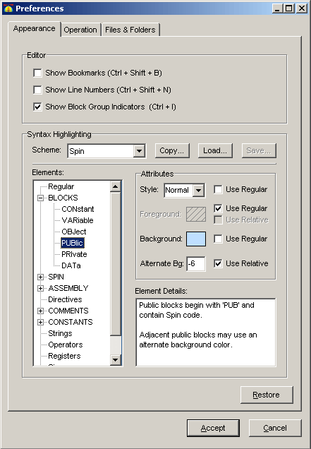
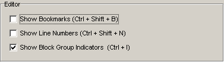
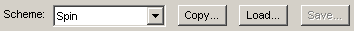
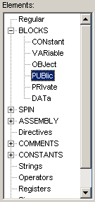
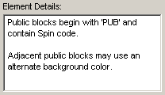
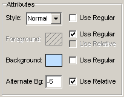

The Preferences dialog allows you to view and set persistent features of the Propeller Tool software. Settings are arranged by category into tabs and group boxes.
The Appearance tab contains settings that affect the appearance of the editor and source code.


The Editor group contains items that affect the display of the edit control, the area where source code is displayed and modified. The Shortcut Keys options for controlling these features are given next to each checkbox.
The Syntax Highlighting group contains items that control how source code is highlighted in a syntax-sensitive way (bolding, coloring, etc.).

The Scheme field indicates the name of the scheme currently in use. All the items below Scheme reflect the settings of that syntax highlighting scheme. This feature allows a collection of syntax highlighting settings to be saved as one logical group of settings.

The Elements list shows all the aspects of the Propeller Tool syntax highlighting feature. Elements are listed either as individual items, or as groups of items. Groups appear in all uppercase letters (BLOCKS, SPIN, ASSEMBLY, etc.) with a plus or minus sign to their left indicting it's an expandable/collapsible group of elements.
Select an element (not a group) in the Elements list to display its settings in the Attributes area. NOTE: Groups are just collections of elements and have no adjustable attributes; expand a group and select one of its child elements to adjust its attributes.

The Element Details box gives a description of the selected element.
Select element (not a group) in the Elements list, then read this description and its examples, if given, to better understand what part of the syntax highlighting this element affects.

The Attributes area lists applicable settings for the selected element in the Elements list.
Attributes that don't apply to the current element are ghosted and those that do apply are available for adjusting.
A Restore button appears on every preference tab. Pressing the Restore button resets all the settings of that tab to their defaults without affecting those of other tabs.
Pressing the Accept button makes all changes on all preference tabs official and active in the Propeller Tool.
Pressing the Cancel button returns all changed settings, on all preference tabs, back to their original state; the state they were in when the Preferences dialog was opened.
Propeller Help Version 1.2
Copyright © Parallax Inc., dba Parallax Semiconductor
6/17/2011
 Show Bookmarks
Show Bookmarks